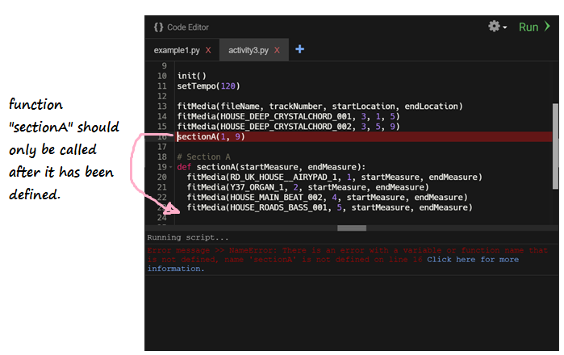

Funções
Funções são uma forma de organizar partes de código semelhante ou repetido. Em vez de digitar constantemente o mesmo código, podemos colocar o código desejado em uma função e chamá-lo sempre que quisermos usá-lo.
Observação: O objetivo de uma função é ajudar a reduzir código redundante durante todo o programa.
Criando uma função
Defina sua função - nome e parâmetros
Para fazer uma função em python, devemos usar a palavra-chave def. Esta palavra-chave informa ao editor de código onde a função está definida. def é seguido pelo nome da função. O nome da função é usado para chamar sua função de outras partes do programa.
Para generalizar a função (para que possamos usá-la em vários lugares), talvez precisemos enviar algumas informações para ela. Isto é conseguido usando parâmetros. Eles são colocados entre parênteses () e seguem logo após o nome da função. Se nenhum parâmetro for necessário, eles poderão ser ignorados. A declaração da função termina com dois pontos.
As instruções que são executadas cada vez que a função é chamada seguem nas próximas linhas. As guias são muito importantes aqui, portanto, certifique-se de que seu código esteja recuado corretamente. Cada linha recuada após a linha de definição da função (com exceção dos comentários) será executada quando você chamar a função.
Esta é a aparência de uma função:
def functionName(parameter1, parameter2, ...):
# escreva algum código
# chama esta função de outras partes
# do código usando functionName

Certifique-se de que a primeira linha da sua função sempre termine com dois pontos :
Escreva o corpo da função
Em Python, a indentação define qual código é controlado pela função. No exemplo abaixo, para chamar a função sectionA, você deve especificar 2 parâmetros, startMeasure e endMeasure. Quando você chama sectionA, as 3 linhas de função fitMedia são executadas. As 2 chamadas de função fitMedia na parte inferior estão fora do corpo da função sectionA.
#Seção A
def sectionA(startMeasure, endMeasure):
fitMedia(RD_UK_HOUSE__AIRYPAD_1, 1, startMeasure, endMeasure)
fitMedia(HOUSE_MAIN_BEAT_002, 4, startMeasure, endMeasure)
fitMedia(HOUSE_ROADS_BASS_001, 5, startMeasure, endMeasure)
fitMedia(HOUSE_DEEP_CRYSTALCHORD_001, 3, 1, 5)
fitMedia(HOUSE_DEEP_CRYSTALCHORD_002, 3, 5, 9)
O código recuado abaixo da função sectionA é o código que é executado cada vez que a função sectionA é chamada.
Aviso: Como a identificação é muito importante em Python, certifique-se que o corpo da função sempre começa com 2 espaços.
Retornando um valor
Muitas vezes você não deseja apenas imprimir os resultados ou executar uma ação, mas deseja que a função lhe forneça o resultado da execução da ação. Para fazer isso, você usa a palavra-chave return.
def my_function(x):
return 5 * x
print(my_function(3)) # imprime 15
print(my_function(5)) # imprime 25
Usando a função - Chamada de função
Para chamar uma função, insira o nome da função e seus parâmetros
onde você deseja executar a função. Por exemplo, para chamar a função sectionA, faríamos algo assim:
sectionA(1,9)
Neste exemplo, sectionA será chamado com o valor startMeasure como 1 e o valor endMeasure como 9.
Tenha cuidado: Ao criar uma função em Python, você deve definir o função e seu conteúdo antes de ser chamada. Em outras palavras, no código, você precisa colocar a declaração da função acima da chamada da função. Caso contrário, você receberá um NameError como abaixo. Veja o seguinte figura para um exemplo: 
Desafio 1 – Crie sua própria função!
Desafio: Crie uma função chamada addNumbers que receba 2 parâmetros chamados número1 e número2 e imprima a soma no console. Chame a função addNumbers com os parâmetros 3 e 5. O que está impresso no console?
Desafio 2
Vamos tentar criar algumas funções matemáticas simples. Crie uma função chamada add que receba dois parâmetros, número1 e número2, e retorne a soma dos dois números.
Primeiro copie a estrutura da função tripla. Altere o nome da função tripla e substitua o número do parâmetro por número1 e número2, separados por vírgula. Tanto o número1 quanto o número2 devem ser int e não se esqueça de adicionar o número1 e o número2 juntos!
Para verificar se sua função está funcionando corretamente, adicione o seguinte código após a definição de sua função, que chama a função add() e salva seu valor em uma variável. Por exemplo:
value2 = add(2, 3)
print("Isso deve imprimir 5: " + str(value2))
Desafio 3
Você pode criar funções para subtração, multiplicação e divisão?
Teste as funções chamando cada função, salvando seu valor de retorno e imprimindo-o no console.